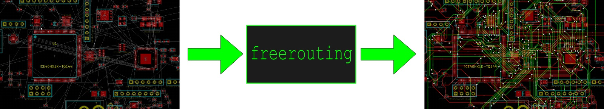

About freerouting
Original freerouting
Freerouting is an advanced autorouter for all PCB programs that support the standard Specctra or Electra DSN interface.
It basically does this:

What has changed for freerouting_cli?
- GUI got removed, freerouting_cli is command-line only
- Simpler, Makefile based build system
- the usual rules (make install, make clean) are implemented
Introduction to freerouting
This software can be used together with all host PCB design software
systems containing a standard Specctra or Electra DSN interface. It
imports .dsn-files generated by the Specctra interface of the host system
and exports Specctra session files.
There are three modes for routing traces: 90 degree, 45 degree and free
angle. The interactive router is production stable and unsurpassed in its
free angle capabilities. An autorouter is currently under development and
already stable in the conventional 45 degree mode.
The minimal set of arguments for routing is: -de dsn-file -do ses-file